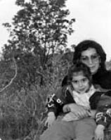
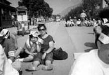

“Hep Bir Hüznü Okurum Gözlerinde.”
Avşin Semizer16
12 Eylül 1980 darbesinden hemen sonra annem ve babam Turan Semizer tutuklanmışlar. İkisi de Halkın Kurtuluşu’nda mücadele veren devrimcilermiş o sırada. Babam, 3 yıla yakın Mamak Cezaevi’nde, annem de 8 ay kadar İki Yıllık’ta yatmış. Annemler çok kalabalık bir grup olarak yakalandıklarından Mamak’a gittiklerinde onları koyacak yer bulamamışlar, bu nedenle topluca İki Yıllık’a gönderilmişler.
Annem Sakatlanıyor
12 Eylül’den önce belini sakatlamış annem. İlk seferinde otobüsten düşmüş, ikinci seferinde de bir eylemden kaçarken uçurumdan yuvarlanmış, bir gecekondunun damına, oradan da yere düşmüş.
Bu,1980’in Ocak ayında olmuş. Sonra iyileşmiş ve normal yaşamına dönmüş ama beline çok dikkat etmesi gerekiyormuş. 12 Eylül geldikten bir hafta sonra içeri alınmış. O zamanlar gözaltı süresi 10 günmüş. Ancak, annemler oradayken 20 güne çıkarılmış ve o 20 gün boyunca annem, aralıksız olarak işkence görmüş. Özellikle ilk 13 gün hücreye bile konulmadan, uyutulmadan, yedirilmeden, içirilmeden sürekli çeşitli işkencelere maruz kalmış. Bunların arasında dayak, falaka, askı, tecavüze yeltenme, duvardan duvara atıp savurma, üstüne çıkıp çiğneme gibi akla gelebilcek her çeşit işkence varmış. İşkencehaneye girdiğinde annemin ilk tepkisi “Belime vurmayın, belim sakat!” olmuş. Onlarsa, “Oo ne güzel! Bir komünist orospu felç olsun, bizim için çok güzel bir şey olur bu” demişler. Annem 20 gün sonunda işkencehaneden çıktığında artık zor yürüyormuş. Zaten ağrılardan bitmiş tükenmiş, duramıyormuş hiçbir şekilde. 2-3 gün sonra artık hiç yürüyemez, kalkamaz olmuş ve sol bacağına da hükmedemiyormuş. Yatağa düşmüş ve cezaevinde olduğu 8 ay boyunca da yataktan asla çıkamamış. Bir tek tuvalet ihtiyacı için kaldırılıyormuş. Banyo için de koğuşa su çıkarılıyor, leğenin içinde 3 arkadaşı annemi tutarak yıkıyorlar ve yatağına geri yatırıyorlarmış. Annem, sonuç olarak 52 kilo olarak girdiği cezaevinden 38 kilo olarak çıkmış.
Cezaevinden çıkınca onu hemen ameliyata almışlar. Doktorun dediğine göre normalde insanın belinde bir, iki disk kayarken, annemin belindeki diskler dağılmış vaziyetteymiş. Annem artık yürüyemeyeceğini düşünüyormuş ama sürpriz bir şekilde, çok yavaş olsa da bir süre sonra büyük ölçüde iyileşmiş.
Bu arada babamla evlenmişler. Doğum yapmasına ise ancak 1985’te izin verilmiş. Ben de zaten 1986 doğumluyum.
Annem bütün bu işkencelerin ardından 146. maddeden yargılandığı davadan beraat etmiş.
İşkenceyi Öğreniyorum
Ben bu hikâyeleri birden değil parça parça öğrendim, zamanla tamamlandı. Evde konuşulurdu ama babamın hikâyelerinden çok, annemin hikâyeleri anlatılırdı. Babam anlatmaktan pek hoşlanmaz, içeri ne zaman girip ne zaman çıktığını sorduğum zaman bile geçiştirirdi konuyu. Annem onun aksine çok rahat konuşurdu.
Geçmişte, tutuklandıklarını ilk öğrendiğimde herhalde 4-5 yaşlarındaydım. İşkence hikâyelerini bana anlatmaya başladıklarındaysa 7-8 yaşlarında, ilkokuldaydım. İlk duyduğumda ne hissettiğimi çok net hatırlıyorum. Şoke olmuştum ama aslında yaşadığımın bir şok olduğunu o an düşünmemiştim. İlk tepkim inanamamak olmuştu. Hikâyeler arttıkça, o kadar da olmaz, o kadarı mümkün değil, tamam bu olmuş olabilir ama o kadarı da olmaz herhalde diye sorguladığımı hatırlıyorum. İçselleştirmeye çalışıyor insan onu bir yerde ama içselleştiremiyor. Aklına geldikçe geriliyor. Oturup ağlamadım bunun üzerine ama her aklıma geldiğinde bir yerim titriyor, sinirleniyorum, geriliyorum, olmamalı, olmaması gerekirdi diyorum. Hâlâ ilginç bir şekilde mutsuzluğa ve de umutsuzluğa dönüşmüyor. Daha çok gerginlik ve sinir bozukluğu şeklinde etkiledi beni bu hikâyeler.
Bizde haberler bile birlikte izlenip tartışılırdı. Her şey nedenleriyle, sonuçlarıyla benimle konuşulurdu. Zaten insanlar neden cezaevine girer, girince neler olur gibi konulardan haberdardım ilkokul öncesinde bile. Anneme yaşadıklarının detaylarını sormazdım; neden sormazdım ben de bilmiyorum. Hâlâ da sormam. Annemin ne yaşamış olabileceğine dair akıl yürütmeye gerek duyabileceğim bir ortam olmadı çünkü annem anlatmayı tercih ederdi genelde. Yaşı küçüktür anlatmayayım, büyüsün de öğrensin gibi bir politika izlemedi. Ben o dönemlerde askıdan elektriğe kadar, her şeyi biliyordum ama askıda ne hissettiğini bilmek için çok meraklı davranmıyordum çünkü huzursuz oluyordum, üzülüyordum. Bunların konuşulmasından değil, bunların yaşanmış olduğunu bilmekten dolayıydı huzursuz oluşum.
Bir daha gelip annemi, babamı alabilirler ya da başkalarına,

Avşin, annesi Dilvin’le
etrafımdaki diğer sevdiğim insanlara da bu işkenceleri yapabilirler diye düşünüyordum. Ama bu bende bir korku değil daha çok kızgınlık yarattı hep.
Aslında annem bana hamile olduğunu öğrendiği gün, babam tekrar cezaevine alınmış. Ben de hem doğmadan önce hem de bebeklik dönemimde bir süre cezaevi görüşlerine gidip gelmişim annemle. Hatta görüş öncesi aramalarda benim bezime kadar ararlarmış.
İşkencenin Etkileri
Annemin hâlâ yılda birkaç ay yatak faslı olur. Bazen bir haftada kalkar ama bazen de kalkamaz, üç ay kadar devam eder bu yatak faslı. Her sene tekrarlar bu. Ağrı kesicileri hiçbir zaman eksik olmamıştır yaşamında çünkü ağrıları hiçbir şekilde kesilmemiştir. Omurgası eğri kalmış, S şeklindeymiş işkenceden sonra. Tabii sadece belindeki problemle kalmadı. Koltuk altlarındaki bütün bağlar, tendonlar zorlanmış, kopuklar oluşmuş, omuzunda bulunan ve boynundan beyne giden sinirler sıkışmış. Ayrıca şu anda ellerinde bir his eksikliği var ve zor kullanıyor. Mesela boynu, belli bir açıdan öteye dönmüyor, eğri kalmış. Üstelik ameliyat olsa da düzelecek gibi değil. Bunlar çözümsüz ve kalıcı hasarlar. Birçoğu yaşadığı askının, boyuna alınan darbelerin tipik bulguları, en azından doktorların ifadesi bu. Annem ağrı kesicilerini almaya devam ediyor. Normalde 500 miligramlık alıyorsa, bazı geceler dozajı 1000 miligrama çıkarıyor ağrılarından dolayı.
İşe Devam
Bütün ağrılarına rağmen annem çalışma yaşamına devam etti tabii. Önce çevirmenlik, sonra öğretmenlik yaptı. Üstelik öğretmenken sendikada başkanlık yaptı bulunduğu yerde. Çok yoğun bir iş temposu, çok yoğun bir siyasi temposu vardı. Her şeyi kontrollüydü ama ayağı aksadığı dönemlerde bile mitinglere de okula da o haliyle giderdi. Bu arada öğrencileriyle de arası çok iyiydi.
O dönemde çok küçüktüm, hayal meyal hatırlıyorum ama babam ben 2.5 yaşındayken dönmüştü ve bir reklam şirketinde çalışmaya başlamıştı. Annem de o sırada gece gündüz çevirmenlik yapıyordu. İstanbul’da yaşıyorduk, tabii ki ilk dönemlerde ekonomik sıkıntı çektik. Ama sonrasında yavaş yavaş durumumuz düzeldi. Liseyi bitirdiğim sene de babamın işi nedeniyle yurtdışına çıktık.
Aramızda espridir mesela, annem bana, sen kendine dikkat edeceksin der, bense esas sen dikkat edeceksin derim. O da her zaman “Benim bedenim dirençli bir beden, direnmeye endekslenmişim, kendimi hazırlamışım bu yaşama” diye cevap verir. Hakikaten birçok şeyi de o dirençle yaptı diyebilirim. Mesela ağrısı olduğu zaman biraz dövünür, ancak uykuya geçeceği zaman alır ağrı kesicileri, hiç olmazsa uykum rahat olsun diye. Bol ağrı kesicili, bol yataklı bir yaşam sürdürdü, hâlâ da sürdürüyor ama yine de yapmak istediği çok fazla şeyi yaptı yaşamında.
Siyasi Yaşam Devam Ediyor
Annem mücadeleye hep devam etti. İstanbul’dan sonra Bursa’ya yerleştiğimiz dönemde Ankara’da eylemlere giderdi. Ben o zaman ilkokuldaydım. Her eyleme gittiğinde bir not yazar koyardım cebine. Fazla eşya taşıyamadığı için üzerinde bol cepli bir yelek olurdu genellikle. O yeleğin ceplerine yerleştirirdim notları. Otobüse bindikten sonra açacaksın ve yazdıklarım eylem sırasında sana güç verecek derdim. Bir notumda şöyle yazmışım: “Anneciğim biliyorum gitmen lazım. Çünkü sen busun, bunu yaparsan dünyanın daha güzel olacağına inanıyorsun, bu nedenle ben de gitmene izin veriyorum ama senden bir şey istiyorum, ben annesiz kalmak istemiyorum, lütfen kendine dikkat et ve bana geri dön.” Bir zaman sonra beraber gitmeye başladık eylemlere.
Kimlerle Konuşuyorum
Yaşıtlarımla da arada konuşurdum ama bu konuları konuşabildiğim insanlar, genelde daha çok benden büyük olan insanlardı. Asosyal ve arkadaşsız bir çocuk olmadım ama yöneldiğim ortamlar hep yaşıtlarımdan büyük insanlar ve onların bulunduğu ortamlar oldu. O kadar yalnız değildim. Özellikle annemin sendika başkanlığı yaptığı, Gemlik’te yaşadığımız dönemde bir çocuk köşesi açılmıştı sendikada. Sadece ben gelmiyordum oraya, başkaları da çocuklarını getiriyordu, onlarla biraz daha bu işlerin

Avşin, annesiyle birlikte sendika yürüyüşünde
içinde var olabiliyorduk, daha rahat hissedebiliyorduk kendimizi. Bize de küçük küçük işler düşüyordu. Mesela eylemlerde karton şapka satıyorduk. Bir şekilde yaşımızı aşan durumların da oluştuğu oluyordu ama verilen küçük görevlerle kendimizi bir şekilde o ortama ait hissediyorduk. Kaybolmuyorduk yani o ortamlarda. Güzel günlerdi.
İnsanlarla dost olabilen bir insanım; iletişim kurmayı, dinlemeyi severim. Arkadaşlık kurarken, tam zıt bir aile yapısına sahip, mesela babası polis, anlaşamayız gibi önyargılarım olmadı hiçbir zaman. Başta bana karşı önyargıları hissetsem de ben bir şekilde kendimi anlatmaya çalışarak giderim insanların yanına. Örneğin, ben ortaokuldayken annem, Eğitim-Sen başkanlığına devam ediyordu. Okuldan bir arkadaşım vardı, iyi bir çocuktu. O da önyargılı biri değildi, çok sıkı fıkı dost değildik ama anlaşırdık. Bir gün sendika ile ilgili bir etkinlik düzenlenmeye karar verildi. Dayanışma gecesiydi sanırım; konserler, şiir dinletileri, konuşmalar olacaktı. Ben de annemden bilet almıştım okulda arkadaşlarıma satmak üzere. Bu arkadaşı da ikna ettim, ona da sattım. Akşam onunla buluşup etkinliğe birlikte gittik. Tribünde otururken annem açılış konuşmasını yapmak için çıktı. O sırada çocuk dedi ki: “Bak şurada duran polis grubu var ya, şu alanı kuşatmış olan, onların başındaki adam Emniyet Müdürü, benim babam.” Ben de dedim ki: “Konuşma yapan da benim annem.” Böyle zıtlıklarla dolu durumlarla çok karşılaştım ama fazla tepkisel yaklaşmadığım için çok sorun olmadı.
Kızgın mıyım?
Annemlerle çok açıktır ilişkimiz. Söylerim düşündüklerimi. Bilinçaltımda kızdıysam onu bilemem ama kendimi çok yokladım bu konuda. Anneme ve babama hiç kızgınlık hissetmedim ve içimde biriken bir kızgınlık bulamadım onlara karşı.
Onların verdiği mücadeleyi verir miydim diye çok düşündüm. Dönemi yaşamış olmak lazım buna karar verebilmek için. Şu dönemde farklı şeyler yaparım, o dönemde yaşamış olsam farklı şeyler yapardım diye düşünüyorum. Ben 1986 doğumluyum, birebir darbe dönemini yaşamadım ama klişe söylemiyle benim bile hayatımın bir parçası haline geldi 12 Eylül. Zaten doğduğumda babam halen cezaevinde olduğu için bir şekilde yaşadım da aslında. Bazı şeyleri değerlendirirken, hayatla ilgili karar alırken geçmişinizden getirdiğiniz durumlarla ilgili kafanızda bir sürü düşünce döner, onu değerlendirmeden bir başka şeye geçmek istemezsiniz. Bana hayatımın bir parçası olma konusunda hem katkısı hem de götürdükleri oldu diyebilirim 12 Eylül sürecinin.
Ne verdi dersek; bilinç getirdi sanırım. Politik olaylarla ilgili düşünce yapıma ciddi anlamda katkı sağladığını söyleyebilirim. Ne götürdü? Zaman zaman belli olaylar karşısında huzursuz bir çocuk, gergin bir insan oldum. Sanırım bu gerginliğim ve huzursuzluğum da, sürecin getirdiği bilinçle bağlantılı. Koşullardan hoşnut olmama durumu, gerginliğe ve huzursuzluğa yol açıyor. Ama bir şeylerden rahatsız olmaktan, hoşnut olmadığım şeylere karşı bir şey yapma ihtiyacı içinde bulunmaktan memnunum yine de. Tepki vermemektense, görmeyi ve huzursuz olmayı tercih ederim. Bu psikoloji, değişik inişli çıkışlı durumlara yol açtı bende. Geniş ve rahat büyümüş insanlar olamadık o anlamda.
12 Eylül’ü İrdelemek
2000’lerde 12 Eylül’ün yıldönümünde ilk defa toplu olarak Ankara’da merkezi bir eylem planlanıyordu. Bir grup ODTÜ’lünün kurduğu ve annemin de dahil olduğu bir internet iletişim grubu vardı o sırada. Annem sık sık paylaşımlarını bana da aktarırdı. “Acaba ben de bir şey yazabilir miyim onlara, eyleme dair bir not gönderebilir miyim?” dedim anneme. O da kabul etti. Benim amacım aslında o grup içindeki yaşıtlarıma ulaşmaktı. Çünkü annemin fikren birlikte olduğu insanların çocuklarıyla daha iyi anlaşabileceğimden emindim. “Ben sizlerle buluşup tanışmak istiyorum. 12 Eylül için biz çocuklar ne yapabiliriz? Yalnız annelerimiz, babalarımız değil bizler de o sürecin mağdurlarıyız. Çünkü biz de, başka biçimlerde olsa da, bunları yaşadık ve yaşamaktayız. Annelerimiz, babalarımız hâlâ yaşadıklarının etkilerini taşıdığı, o süreçten gelen problemleri olduğu için, dolayısıyla bizler de hâlâ sürecin mağduru sayılırız. Acaba o etkinlikte bizler de ayrı bir pankart altında yürüyemez miyiz?” diye bir mail attım. Yaşıtlarıma ulaşamadım, cevaplar büyüklerden geldi genellikle: “Biz mağdur değiliz. Bu mağduriyet olmaz Avşinciğim. Yazmışsın ama... gözlerinden öpüyoruz.” gibi karşı çıkışlar oldu. “O zaman; peki mağdur demeyelim, başka bir şey diyelim ama mağdursunuz aslında. Bir süreçten mağdur çıkmışsınız, hâlâ bunun acısını yaşayan insanlarsınız ve zarar görmüşsünüz. Zarar gören insan mağdurdur” dediğimi hatırlıyorum.
Annem, bende neyin eksik kaldığını sorsanız, belli bir yalnızlık verdik Avşin’e biz der. Evet belli bir açıdan yalnızlığa itti beni. Yaşıtlarım Kemal Sunal filmleri izler, kahkahalarla güler, ben sessiz bir odada okumak isterdim. Arkadaşlarımın çoğu bir şeyler içip bir yerlerde oturmak, vitrin gezmek isterlerdi ama ben bundan pek zevk almazdım. Belki biraz da bu nedenlerden dolayı annemin arkadaşlarıyla görüşmeye ben de giderdim. Anneme “Görüşmeye devam edelim ama çocuklarıyla da tanışmak istiyorum, eminim daha iyi anlaşacağım” derdim. Bu şekilde görüştüğümüz, yakın olduğumuz birkaç aile oldu ama çok da uzun süreli görüşmeler olmadı. Yine de ben hiçbir zaman anlaşamadığım insanlardan kaçan bir çocuk olmadım. Hep konuşmaya çalıştım ve insanlarla ilişkiyi bazı düzeylerde sürdürmenin mümkün olduğunu gördüm. Bana çok zıt olan insanlar da dahildir buna. İnsanlarla belli ölçülerde anlaşabilmek, uzlaşabilmek mümkün, onu gördüm çocukluğumdan itibaren. Gençlerin tabiriyle, “kankalık durumları”, “Sıkı fıkı her şeyi paylaşmalar.” vs sınırlı oldu. Ama yine de insanlarla anlaşabilmek, ilişkiyi sürdürebilmek mümkün oldu benim açımdan. Aynı olmak zorunda değiliz, onu gördüm.
Yakın arkadaşlarımla, annem ve babamla ilgili konuştuğum, yaşadıklarını paylaştığım olmuştur. Çok da ilgili değiller tabii, bir soru listesiyle bana gelen hiç olmuyor, olmadı da ama merak edenler de var tabii... Sağdan da soldan da; hatta ilginç bir şekilde belki de daha çok sağ görüşlü arkadaşlarım tanışmak istedi annemle. Onlar sordu, annem anlattı.
12 Eylül’ün hayatımda yaptığım tercihlere doğrudan etkisi olmadı ama dolaylı olarak oluyor ve olmaya da devam etmekte. Örneğin, ben mimarlık projelerimde bir otel projesi üzerinde çalıştığımda, hiçbir zaman sırf rant amaçlı, Boğaz’a sıfır bir araziye lüks bir otel kondurma yaklaşımına gitmedim. Mutlaka sosyal yönden de irdeledim çalışmalarımı. İnsanları şu şekilde bir araya getirir, şu mahallenin sosyal yönlerini bu şekilde geliştirir, katkı sağlar vb. düşüncelerle mesleğimin sosyal yönüne de eğilmeyi tercih ettim onun yerine.
Politik açıdan, herhangi bir grup ya da bir örgüt altında değilim ama bölümümüzün öğrenci temsilciliğiyle birlikte haklarımızı aramak konusunda çeşitli çalışmalar yaptık şimdiye kadar. Bir şeylere ses çıkarmayı seviyorum ama kafama tamamen uyan, kendimi adayabileceğim bir grup ya da örgüt bulamadığım için o şekilde bir aktifliğim yok siyasi anlamda. Ancak haksız bulduğum her türlü olaya karşı sesimi çıkarmaktan, protestolara, eylemlere katılmaktan da geri durmadım şimdiye kadar.
Benim okulum aslında politik, kapıda sürekli polislerin bulunduğu bir okul. Sürekli oturma eylemleri yapılır. Dolayısıyla; durağan değiliz ama genel anlamda gençliği değerlendirdiğim zaman çok farklı profiller var. Olaydan hiç haberdar olmamayı seçenler de, çok politik ve radikal olanlar da mevcut. Buna karşın, biraz daha anlamaya, görmeye uğraşarak bir şeyler yapmaya çalışan, kendime daha çok benzettiğim insanlar da var.
Psikolojik Destek
Annemin bir de Kürt kimliği var. Bir Kürt siyasetinin içinde olmamasına rağmen o kimliğinden dolayı çok özel işkencelere alındığını bilirim. Bu işkencelerin bazılarının ne olduğunu yalnızca bir ben, bir de başka bir Kürt arkadaşı bilir. İnsanın düşünmeye, hatırlamaya çekindiği şeyleri dile getirmesi zor oluyor. Ama annem paylaştıkça, anlattıkça rahatlıyor. Yıllarca anlatırken titremiştir. Üşür mesela, her anlattığında çok üşür. Battaniyeye sarıldığı bile olmuştur yaz gününde ama anlattıkça da daha az üşümeye başlamıştır. Yurtdışında anneme, hangi işkence rehabilitasyon merkezinde tedavi olduğunu sorarlardı. “Bizde öyle merkezler yoktur, biz kendi kendimizi tedavi ettik” derdi annem de. Annemin tedavisi konuşmak, anlatmak, mücadeleye devam etmekti. Devam etmeseydi belki, o da tedavi olamazdı.
Bir dönem annem ve babam, Avşin içine mi kapanıyor acaba diye tedirgin olmuşlar. Ben arkadaşlarımla yalnızca vitrin gezip ardından bir kafede oturmak değil; aynı zamanda okuduğum bir kitabı, gördüğüm bir filmi tartışabilmek, tiyatroya gidip birlikte bir oyun izleyebilmek de istiyordum. Bu benim ortaokul dönemime denk gelen süreçti ve yalnızlaşma tehlikem annemleri endişelendirmişti. Lise sondayken, bir psikologla görüşmemi istediler. Söylenecekleri zaten ezbere bildiğimi düşündüğüm için kabul etmek istememiştim ama sonunda annemlerin zoruyla iki, üç seans gittim. Psikolog bir kez annemi de çağırıp ona direkt “12 Eylül çocuğu mu Avşin? Geçmişte bir şey yaşadınız mı?” diye sormuş. Annem de anlatmış bütün süreçleri. Zaten daha sonra devam etmedim seanslara.
Canımı En Çok Acıtan
Sanırım işkence hikâyeleri canımı acıtıyor. Direkt insana, o dönemi yaşayanlara çok kalıcı etkiler vermiş olması açısından işkence hikâyeleri canımı acıtıyor, dahası sinirlendiriyor. Örneğin, 14-15 yaşlarında Bursa’da şair ve yazar olan biriyle tanışmıştım. 8-10 kedisiyle derme çatma bir evde yaşayan, enteresan bir adamdı. Vücudunda belli özürleri, yüzünde tikleri vardı, yürüyemiyordu doğru düzgün. Böyle yetenekli bir insanın işkenceden dolayı bu hale gelmiş olmasına birebir tanıklık etmek insanın canını acıtıyor tabii, daha çok da sinirlendiriyor.
12 Eylül Davası
Davayla ilgili yeterli olmasa da, güzel gelişmeler yaşandığını düşünüyorum. Bu bir adımdır. Bu konuların konuşulabilir hale gelmesi bile önemli; ancak çok yetersiz tabii. Özellikle gençlerin, bu konuya dair tutumları, haberdar dahi olmamaları rahatsız edici bence. En azından yaşananları görünür kılması, bazı noktaları ortaya çıkarması açısından güzel bir adım. Bir an önce sonuçlansın istiyorum artık. Ama bu gidişatla zor görünüyor. Halbuki başta daha çok umutluydum.
Sonucu ne olursa olsun yargılansınlar istiyorum. İnsanlara, özellikle bu acıyı yaşamış insanlara gösterilmeli bu yargılama süreci. Ölsünler, korkunç cezalar alsınlar gibi düşünceler yok kafamda ama bir şeylerin adı konsun istiyorum. Sadece iki generalin yargılanıyor olması tabii ki yeterli değil ama en azından şimdilik o iki generalin yargılanıyor olması da önemli. O kesin bir şey.
Bir şeyler kabul edilebilir hale gelmeli. Örneğin, Almanya’da soykırım oldu ve şu anda tarih kitaplarında bu konuda özür dileniyor. Bu tür bir olgunluğa erişmeli insanlar, yapılan hatalar kabul edilmeli artık. Tabii ki bunlar yalnızca sözde kalmayıp literatürde de kabul edilir hale gelmeli. Hatta gerekiyorsa herkesin bilmesi için popüler tarihe dönüştürülmeli diye düşünüyorum. Birkaç yıldır 12 Eylül çok fazla dillendirilmeye başlandı ve neyse ki gazete ve dergilerde de az çok kendine yer buluyor. Tabii ki davanın da buna bir katkısı oldu o anlamda. 12 Eylül konusunda onca çıkan sesi duymayıp Hatırla Sevgili dizisiyle birden solcu olan insanlar tanıyorum kendi jenerasyonumdan. Bu bile bazı şeylerin göstergesi. Ne şekilde olacaksa, ne şekilde anlıyorlarsa, ne şekilde içselleştirebiliyorlarsa o şekilde sunmak zorundayız onlara diye düşünüyorum. Sınırlar şimdi daha muğlak. Bizim jenerasyon gerek medyadan, gerek de popüler kültür ve tarihten çok kolay etkileniyor. Bazı şeyleri bu şekilde içselleştirebilen insanları etkilemenin en iyi yolunun, onlarla anlayacakları dilden konuşmak olduğunu düşünüyorum.
Bunları irdelediğimde hep şu gelir aklıma: Annem 15 günlüğüne yurtdışından İstanbul’a gelmişti ve benimle kalıyordu. Keman dersi almaya başlamış, kemanını da yanında getirmişti. Bir akşam kuzenimle beraber oturuyorduk. Annem de keman çalışıyordu. Televizyon açıktı. Kenan Evren’in katıldığı bir TV programına denk geldik. Bir üniversitede konuşuyordu. Onu dinliyorduk, annem de bir yandan çalışmaya devam ediyordu. Sürekli tepki gösteriyordu; çünkü Kenan Evren’in her söylediğini gençler kalkıp alkışlıyor, bravo diyor, annemse inanamıyor, “Bu gençler nasıl bu kadar kendilerini düşürebilirler?” diyordu sürekli. Derken birisi kalktı, işkencelerle ilgili bir soru sordu Kenan Evren’e, “12 Eylül’de şu kadar insan kaybedildi, bu kadar insan cezaevlerinde öldü, bu kadar insan idam edildi, işkenceden geçirildi, bunlarda katkınız olduğunu hiç mi düşünmüyorsunuz? Siz geceleri yatağa yattığınızda ne düşünüyorsunuz, vicdanınızda bir şeyler uyanıyor mu?” gibi bir soru sordu. Kenan Evren “Şimdi olsa yine yaparım” diye cevap verince annem bir anda kemanı bıraktı ve ağlamaya başladı. Hiç bu kadar şiddetle ağladığını hatırlamıyorum önceden. Dizinde keman, bütün vücudu titriyor ve gözünden yaşlar iniyordu sürekli. Bize dedi ki: “Vasiyetimdir size. Ben göremeyeceğim o günleri. Bu adamların, işkencecilerin, bu süreci yaşatanların, generallerin, cezaevlerinde çalışan subayların yargılandığını ve yalnızca bizim vicdanımızda değil, toplumda da; yasalar nezdinde de mahkûm edildiğini ben göremeyeceğim biliyorum ama, şunu da çok iyi biliyorum ki siz göreceksiniz. Türkiye bir gün bu sürece gelecek. O gün geldiğinde mezarımın etrafında halaylar çekeceksiniz, şarkılar söyleyeceksiniz ve anlatacaksınız, bu süreç mahkûm edildi ve herkesin gözünde bunların mahkûmiyeti tescillendi diyeceksiniz.”
Annem gözlerime baktığında hep derin bir hüznü okuduğunu ve bundan dolayı üzüldüğünü söyler. Belki de bütün bu yaşadıklarımızdır gözlerime o hüznü yerleştiren.
16 1986 doğumlu. Mimarlık öğrencisi. Annesi gözaltına alındığında Avşin henüz doğmamıştı.